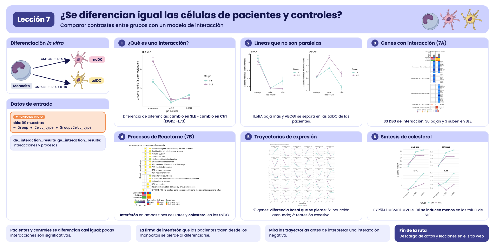
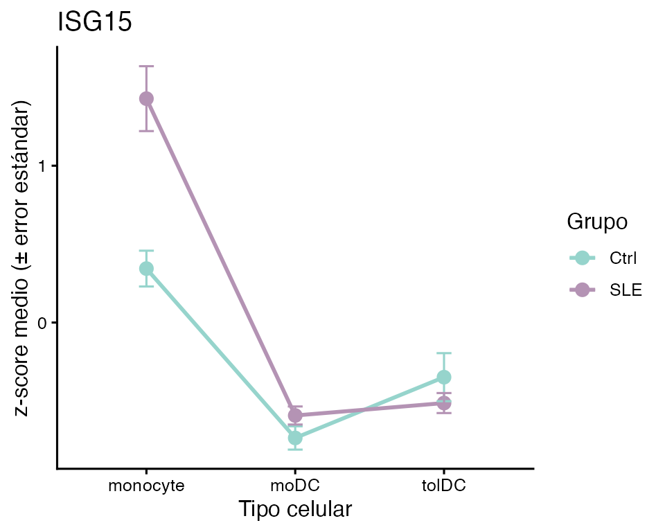
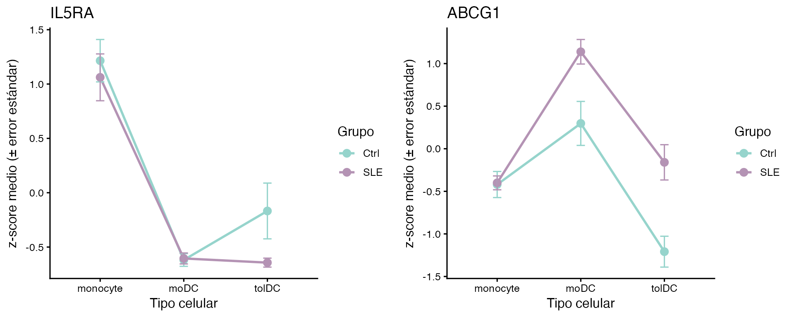
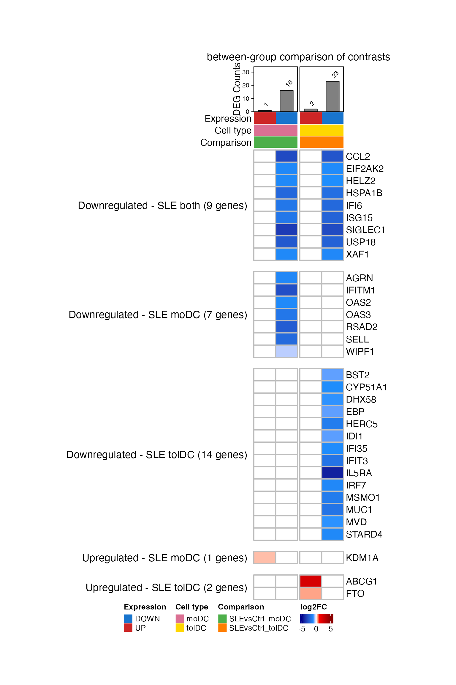
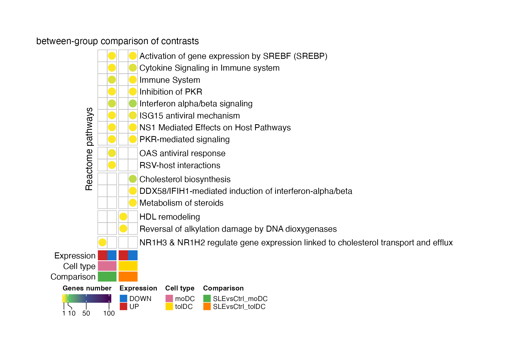
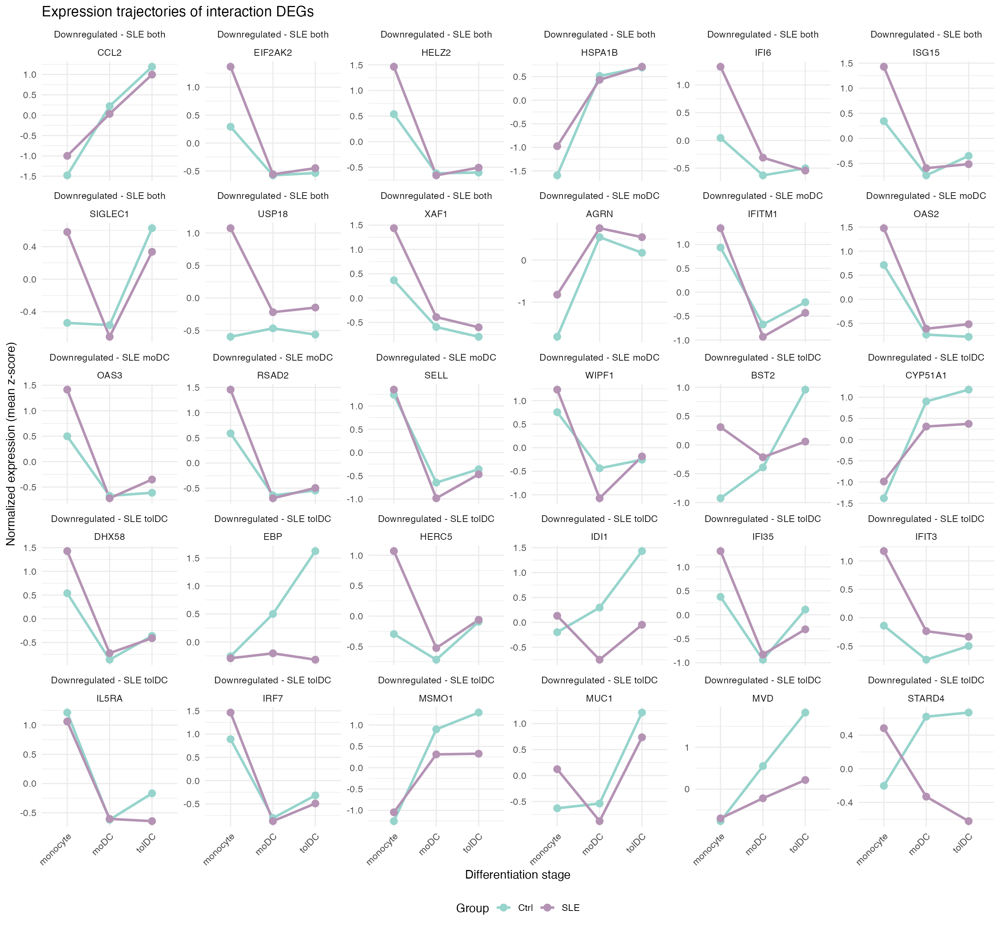
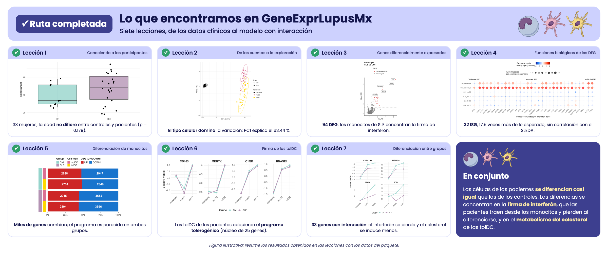

Lección 7: ¿Se diferencian igual las células de pacientes y controles?
Comparar contrastes entre grupos con un modelo de interacción
2026-10-29
Código:vignettes/l7_DEGs_between_groups_es.Rmd
l7_DEGs_between_groups_es.RmdBienvenida
En la lección 5 vimos que, al diferenciarse, los monocitos de pacientes y de controles cambian miles de genes, y que los cambios se parecen mucho. Pero “parecerse” no es “ser iguales”. En esta lección hacemos la pregunta de forma estadística: ¿hay genes cuyo cambio de monocito a célula dendrítica es distinto en las pacientes con lupus? Para responderla usaremos un modelo con interacción, que compara directamente los contrastes de ambos grupos.
Lo que necesitas saber antes: haber hecho la lección Diferenciación de monocitos a células dendríticas.
Al terminar podrás:
- Explicar qué es una interacción y por qué se describe como una “diferencia de diferencias”.
- Ajustar un modelo
~ Group + Cell_type + Group:Cell_typeconDESeq2e interpretar sus coeficientes. - Visualizar una interacción con una gráfica de líneas.
- Resumir los genes con su proceso específico de Reactome.
- Reproducir los paneles A y B de la Figura 7 del artículo.
- Interpretar una interacción con las trayectorias de expresión de cada grupo.
Tiempo estimado: 1.5 horas.
Mapa de la lección
flowchart LR A["filtered_txi
99 muestras"] --> B["Modelo con interacción
~ Group + Cell_type
+ Group:Cell_type"] B --> C["de_interaction_results
padj < 0.05"] C --> D["g:Profiler
go_interaction_results"] D --> E["Proceso específico
de Reactome"] C --> F["Figura 7A
LFC de la interacción"] E --> F E --> G["Figura 7B
procesos por lista"] F --> H["Figura suplementaria
trayectorias de expresión"]
Glosario
Estos son los términos que usaremos. Vuelve aquí cada vez que lo necesites.
- Contraste: una comparación entre dos condiciones; por ejemplo, moDC contra monocito.
-
Interacción: ocurre cuando el efecto de un factor
depende de otro. Aquí, cuando el cambio de monocito a célula dendrítica
(factor
Cell_type) depende de si la persona es paciente o control (factorGroup). - Diferencia de diferencias: el valor de una interacción. Es el cambio en las pacientes menos el cambio en los controles.
-
Coeficiente: cada número que estima un modelo;
DESeq2los lista conresultsNames(). - Proceso específico: entre todos los términos enriquecidos en los que aparece un gen, el que tiene menos genes; el más concreto.
- Trayectoria de expresión: cómo cambia la expresión media de un gen a lo largo de las etapas de diferenciación (monocito → moDC → tolDC) en cada grupo.

Resumen visual de la lección 7.
1. Preparación
library(GeneExprLupusMx) # datos del paquete
library(tidyverse) # manipulación de tablas y gráficas
library(ComplexHeatmap) # heatmaps
library(circlize) # escalas de color para ComplexHeatmap
library(cowplot) # unir gráficas en panelesColores y umbral (los mismos de las lecciones anteriores, más los de las listas de esta lección):
cell_color <- c(monocyte = "black", moDC = "palevioletred", tolDC = "gold1")
group_color <- c(Ctrl = "#96d4ccff", SLE = "#b493b4ff")
expression_color <- c(UP = "firebrick3", DOWN = "dodgerblue3")
comparison_color <- c(SLEvsCtrl_moDC = "#4daf4a", SLEvsCtrl_tolDC = "#ff7f00")
lfc_color <- colorRamp2(c(-5, -1, 0, 1, 5), c("darkblue", "dodgerblue", "white", "red", "darkred"))
padj_threshold <- 0.052. Paso 1: ¿qué es una interacción?
Tomemos un gen estimulado por interferón, ISG15. En la
lección 5 calculamos su LFC de monocito a célula dendrítica en cada
grupo:
sapply(de_celltype_results, function(df) round(df$log2FoldChange[df$gene == "ISG15"], 2))
#> Ctrl_moDC Ctrl_tolDC SLE_moDC SLE_tolDC
#> -1.69 -0.95 -3.41 -3.27ISG15 baja al diferenciarse en ambos grupos, pero en las
pacientes baja más: en las moDC, −3.41 contra −1.69. La
diferencia entre esos dos cambios es la
interacción:
Una gráfica de líneas lo hace evidente. Graficamos el z-score medio
de cada grupo en cada tipo celular, usando el checkpoint
zscore_mat:
plot_interaction <- function(gene) {
metadata_cleaned %>%
mutate(zscore = zscore_mat[gene, as.character(sample_ID)],
Cell_type = factor(Cell_type, levels = c("monocyte", "moDC", "tolDC"))) %>%
group_by(Group, Cell_type) %>%
summarise(mean_z = mean(zscore), se = sd(zscore) / sqrt(n()), .groups = "drop") %>%
ggplot(aes(x = Cell_type, y = mean_z, color = Group, group = Group)) +
geom_line(linewidth = 1) +
geom_point(size = 3) +
geom_errorbar(aes(ymin = mean_z - se, ymax = mean_z + se), width = 0.1) +
scale_color_manual(values = group_color) +
labs(title = gene, x = "Tipo celular", y = "z-score medio (± error estándar)", color = "Grupo") +
theme_classic(base_size = 12)
}
plot_interaction("ISG15")
- Si las dos líneas fueran paralelas, el gen cambiaría igual en ambos grupos: no habría interacción.
- Aquí no son paralelas: las pacientes parten de un valor mucho más alto en los monocitos (la firma de interferón de las lecciones 2 y 3) y caen más al diferenciarse.
Una interacción negativa no significa “más bajo en las
pacientes”. Significa que el gen baja más (o
sube menos) al diferenciarse en las pacientes. En el caso de
ISG15, las moDC de ambos grupos terminan con niveles
parecidos; lo que cambia es la pendiente, porque las pacientes parten de
un valor más alto.
3. Paso 2: el modelo con interacción
En la lección 5 ajustamos un modelo para cada grupo y comparamos sus
LFC “a ojo”. Para obtener un valor p de la diferencia,
hay que ajustar un solo modelo con las 99 muestras y un término de
interacción, Group:Cell_type:
library(DESeq2)
dds <- DESeqDataSetFromTximport(txi = filtered_txi,
colData = metadata_cleaned,
design = ~ Group + Cell_type + Group:Cell_type)
dds$Group <- relevel(dds$Group, ref = "Ctrl") # referencia: controles
dds$Cell_type <- relevel(dds$Cell_type, ref = "monocyte") # referencia: monocitos
dds <- DESeq(dds) # tarda unos minutos
resultsNames(dds)
#> [1] "Intercept" "Group_SLE_vs_Ctrl"
#> [3] "Cell_type_moDC_vs_monocyte" "Cell_type_tolDC_vs_monocyte"
#> [5] "GroupSLE.Cell_typemoDC" "GroupSLE.Cell_typetolDC"Cada coeficiente responde una pregunta distinta:
| Coeficiente | ¿Qué mide? |
|---|---|
Intercept |
La expresión de referencia: monocitos de los controles |
Group_SLE_vs_Ctrl |
SLE contra Ctrl, en los monocitos |
Cell_type_moDC_vs_monocyte |
moDC contra monocito, en los controles |
Cell_type_tolDC_vs_monocyte |
tolDC contra monocito, en los controles |
GroupSLE.Cell_typemoDC |
Interacción: cuánto cambia, en las pacientes, la diferencia moDC contra monocito |
GroupSLE.Cell_typetolDC |
Interacción: lo mismo para tolDC contra monocito |
Nos interesan los dos últimos:
de_interaction_results <- lapply(c(moDC = "moDC", tolDC = "tolDC"), function(cell) {
res <- as.data.frame(results(dds, alpha = 0.05, name = paste0("GroupSLE.Cell_type", cell)))
data.frame(gene = rownames(res), res, row.names = NULL)
})Como el modelo tarda en ajustarse, el paquete incluye el resultado
como checkpoint, de_interaction_results:
names(de_interaction_results)
#> [1] "moDC" "tolDC"
head(de_interaction_results$tolDC[order(de_interaction_results$tolDC$padj), ])
#> gene baseMean log2FoldChange lfcSE stat pvalue
#> 7705 ISG15 1571.72540 -2.3242527 0.3964015 -5.863381 4.535367e-09
#> 7348 IFI6 5171.46042 -2.1636287 0.4035187 -5.361905 8.234902e-08
#> 7345 IFI35 1270.40241 -1.1028139 0.2149937 -5.129518 2.904851e-07
#> 1690 BST2 6388.65236 -0.8485252 0.1706817 -4.971388 6.647534e-07
#> 16889 SH3TC2 18.24524 -4.6162394 0.9279896 -4.974452 6.543263e-07
#> 5079 ETV7 57.87252 -3.7694878 0.7671254 -4.913783 8.933559e-07
#> padj
#> 7705 6.634789e-05
#> 7348 6.023419e-04
#> 7345 1.416502e-03
#> 1690 1.944936e-03
#> 16889 1.944936e-03
#> 5079 2.178151e-03Comprobemos que el LFC de la interacción es la diferencia de
diferencias que calculamos a mano para ISG15:
sapply(de_interaction_results, function(df) round(df$log2FoldChange[df$gene == "ISG15"], 2))
#> moDC tolDC
#> -1.73 -2.32En las moDC obtenemos −1.73, prácticamente el −1.72 que calculamos restando. La pequeña diferencia viene de que en la lección 5 el modelo de las pacientes también se ajustó por actividad de la enfermedad y dosis de glucocorticoides.
4. Paso 3: ¿qué genes cambian distinto?
Un gen tiene una interacción significativa si su
padj < 0.05. Lo clasificamos como UP o
DOWN según el signo del LFC, y nombramos cada lista como
SLEvsCtrl_<dirección>_<tipo celular>:
deg_df <- imap_dfr(de_interaction_results, function(df, cell) {
df %>%
filter(!is.na(padj), padj < padj_threshold) %>%
mutate(query = paste0("SLEvsCtrl_", ifelse(log2FoldChange > 0, "UP", "DOWN"), "_", cell))
})
query_order <- c("SLEvsCtrl_UP_moDC", "SLEvsCtrl_DOWN_moDC", "SLEvsCtrl_UP_tolDC", "SLEvsCtrl_DOWN_tolDC")
dplyr::count(deg_df, query = factor(query, levels = query_order))
#> query n
#> 1 SLEvsCtrl_UP_moDC 1
#> 2 SLEvsCtrl_DOWN_moDC 28
#> 3 SLEvsCtrl_UP_tolDC 3
#> 4 SLEvsCtrl_DOWN_tolDC 38Son muy pocos genes, comparados con los miles de la lección 5: casi todo el programa de diferenciación es el mismo en pacientes y controles. Y la mayoría de las interacciones son negativas: son genes que bajan más al diferenciarse en las pacientes.
Aquí solo pedimos padj < 0.05. El LFC de una
interacción es una diferencia entre dos cambios, y todos estos genes ya
tienen diferencias de al menos 0.34 en valor absoluto.
Reto 1. ¿Cuántos de estos genes tienen además una
interacción grande, con |log2FoldChange| ≥ 1?
Ver solución
deg_df %>%
group_by(query) %>%
summarise(total = n(), lfc_1 = sum(abs(log2FoldChange) >= 1))
#> # A tibble: 4 × 3
#> query total lfc_1
#> <chr> <int> <int>
#> 1 SLEvsCtrl_DOWN_moDC 28 23
#> 2 SLEvsCtrl_DOWN_tolDC 38 28
#> 3 SLEvsCtrl_UP_moDC 1 0
#> 4 SLEvsCtrl_UP_tolDC 3 1La mayoría de los genes de las listas DOWN tienen una
interacción mayor a 1: en las pacientes, su caída al diferenciarse es al
menos el doble que en los controles.
Reto 2. Usa plot_interaction() para
graficar IL5RA y ABCG1. ¿Qué tipo celular
explica cada interacción?
Ver solución
plot_grid(plot_interaction("IL5RA"), plot_interaction("ABCG1"), nrow = 1)
-
IL5RAbaja en las tolDC de ambos grupos, pero mucho más en las pacientes (interacción en tolDC, LFC ≈ −4.3). -
ABCG1, un transportador de colesterol, baja de monocito a tolDC en los controles, pero sube un poco en las pacientes: las líneas se separan (interacción en tolDC, LFC ≈ 2.4).
5. Paso 4: ¿en qué procesos participan?
Como en las lecciones anteriores, buscamos términos enriquecidos en cada lista con g:Profiler (GO:BP, KEGG y Reactome):
library(gprofiler2)
set_base_url("https://biit.cs.ut.ee/gprofiler_archive3/e113_eg59_p19") # versión archivada (junio de 2025)
deg_lists <- split(deg_df$gene, deg_df$query)
gost_res <- gost(deg_lists, organism = "hsapiens", correction_method = "fdr",
user_threshold = 0.05, sources = c("GO:BP", "KEGG", "REAC"), evcodes = TRUE)El resultado está en el checkpoint
go_interaction_results:
attr(go_interaction_results, "gprofiler_version")
#> [1] "e113_eg59_p19_903d2221"
go_interaction_results %>%
dplyr::count(query, source) %>%
pivot_wider(names_from = source, values_from = n)
#> # A tibble: 4 × 4
#> query `GO:BP` KEGG REAC
#> <chr> <int> <int> <int>
#> 1 SLEvsCtrl_DOWN_moDC 228 5 12
#> 2 SLEvsCtrl_DOWN_tolDC 190 3 14
#> 3 SLEvsCtrl_UP_moDC 115 NA 18
#> 4 SLEvsCtrl_UP_tolDC 94 2 9Para la figura usamos solo Reactome (REAC). A cada gen le asignamos su proceso específico: el término de Reactome con menos genes en el que aparece (como en la lección 4):
reac_specific <- go_interaction_results %>%
filter(source == "REAC") %>%
separate_rows(intersection, sep = ",") %>%
dplyr::rename(gene = intersection) %>%
group_by(gene) %>%
summarise(specific_process = term_name[which.min(term_size)], .groups = "drop")
deg_reac <- inner_join(deg_df, reac_specific, by = "gene")
dplyr::n_distinct(deg_reac$gene) # genes con anotación en Reactome
#> [1] 33
dplyr::count(deg_reac, query = factor(query, levels = query_order))
#> query n
#> 1 SLEvsCtrl_UP_moDC 1
#> 2 SLEvsCtrl_DOWN_moDC 16
#> 3 SLEvsCtrl_UP_tolDC 2
#> 4 SLEvsCtrl_DOWN_tolDC 23De los 57 genes con interacción significativa, 33 tienen un proceso de Reactome. Esos son los genes de la Figura 7A.
6. Paso 5: genes compartidos y exclusivos (Figura 7A)
Hacemos una matriz de genes × listas con el LFC de la interacción;
queda vacía (NA) si el gen no está en esa lista:
lfc_mat <- deg_reac %>%
dplyr::select(gene, query, log2FoldChange) %>%
pivot_wider(names_from = query, values_from = log2FoldChange) %>%
column_to_rownames("gene") %>%
as.matrix()
lfc_mat <- lfc_mat[order(rownames(lfc_mat)), query_order] # genes en orden alfabético
head(lfc_mat)
#> SLEvsCtrl_UP_moDC SLEvsCtrl_DOWN_moDC SLEvsCtrl_UP_tolDC
#> ABCG1 NA NA 2.35661
#> AGRN NA -1.251214 NA
#> BST2 NA NA NA
#> CCL2 NA -3.075918 NA
#> CYP51A1 NA NA NA
#> DHX58 NA NA NA
#> SLEvsCtrl_DOWN_tolDC
#> ABCG1 NA
#> AGRN NA
#> BST2 -0.8485252
#> CCL2 -2.7396710
#> CYP51A1 -1.0842723
#> DHX58 -0.9784128Agrupamos los genes según en qué listas aparecen. Con la misma función agruparemos después los procesos de la Figura 7B:
list_direction <- sub("SLEvsCtrl_(UP|DOWN)_.*", "\\1", query_order) # UP, DOWN, UP, DOWN
# p. ej., "NA_DOWN_NA_DOWN" = está en DOWN_moDC y en DOWN_tolDC
presence_pattern <- function(mat) {
apply(!is.na(mat), 1, function(x) paste(ifelse(x, list_direction, "NA"), collapse = "_"))
}
pattern_labels <- c(NA_DOWN_NA_DOWN = "Downregulated - SLE both",
NA_DOWN_NA_NA = "Downregulated - SLE moDC",
NA_NA_NA_DOWN = "Downregulated - SLE tolDC",
UP_NA_NA_NA = "Upregulated - SLE moDC",
NA_NA_UP_NA = "Upregulated - SLE tolDC")
gene_pattern <- factor(pattern_labels[presence_pattern(lfc_mat)], levels = pattern_labels)
table(gene_pattern)
#> gene_pattern
#> Downregulated - SLE both Downregulated - SLE moDC Downregulated - SLE tolDC
#> 9 7 14
#> Upregulated - SLE moDC Upregulated - SLE tolDC
#> 1 2
# etiqueta de cada grupo con su número de genes
gene_split <- gene_pattern
levels(gene_split) <- paste0(levels(gene_pattern), " (", table(gene_pattern), " genes)")Ahora las anotaciones de las columnas. Cada lista se identifica por su dirección, su tipo celular y su comparación; encima va un barplot con el número de genes de cada lista:
column_info <- tibble(query = query_order,
Expression = list_direction,
Cell_type = sub(".*_", "", query),
Comparison = sub("_(UP|DOWN)", "", query))
column_anno <- function() {
HeatmapAnnotation("Expression" = column_info$Expression,
"Cell type" = column_info$Cell_type,
"Comparison" = column_info$Comparison,
col = list("Expression" = expression_color,
"Cell type" = cell_color,
"Comparison" = comparison_color),
annotation_name_side = "left")
}
deg_counts <- colSums(!is.na(lfc_mat))
counts_anno <- HeatmapAnnotation(
"DEG Counts" = anno_barplot(deg_counts, add_numbers = TRUE, height = unit(2, "cm")),
annotation_name_side = "left")
ht_fig7a <- Heatmap(
lfc_mat, name = "log2FC", col = lfc_color,
na_col = "white", rect_gp = gpar(col = "gray", lwd = 2),
cluster_rows = FALSE, cluster_columns = FALSE, show_column_names = FALSE,
column_split = column_info$Comparison, column_title = "between-group comparison of contrasts",
row_split = gene_split, row_title_rot = 0, row_gap = unit(5, "mm"),
top_annotation = c(counts_anno, column_anno()),
heatmap_legend_param = list(direction = "horizontal"),
width = unit(4, "cm"), height = unit(20, "cm"))
ht_opt$message <- FALSE
draw(ht_fig7a, merge_legends = TRUE,
heatmap_legend_side = "bottom", annotation_legend_side = "bottom")
¿Qué observas?
- Casi todos los genes son azules: bajan más al diferenciarse en las pacientes.
- Los 9 genes compartidos por moDC y tolDC son casi
todos ISG (
ISG15,IFI6,USP18,XAF1,SIGLEC1…). Las pacientes parten de monocitos con una firma de interferón alta, y esa firma se pierde al diferenciarse. - Las tolDC tienen además genes de la síntesis de
colesterol (
CYP51A1,MSMO1,MVD,IDI1,EBP), y subenABCG1, que saca colesterol de la célula. - En las moDC, solo
KDM1Atiene una interacción positiva.
Reto 3. ¿Cuáles de los genes de la Figura 7A son
ISG? Usa la lista isg_genes de la lección 4.
Ver solución
isg_in_fig <- rownames(lfc_mat)[rownames(lfc_mat) %in% isg_genes$genes]
isg_in_fig
#> [1] "BST2" "CCL2" "DHX58" "EIF2AK2" "HELZ2" "HERC5" "IFI35"
#> [8] "IFI6" "IFIT3" "IFITM1" "IRF7" "ISG15" "OAS2" "OAS3"
#> [15] "RSAD2" "SELL" "USP18" "XAF1"
table(gene_pattern[rownames(lfc_mat) %in% isg_genes$genes])
#>
#> Downregulated - SLE both Downregulated - SLE moDC Downregulated - SLE tolDC
#> 7 5 6
#> Upregulated - SLE moDC Upregulated - SLE tolDC
#> 0 0Los ISG están en los genes compartidos y en los que bajan en cada tipo celular; ninguno está entre los que suben.
7. Paso 6: procesos por lista (Figura 7B)
Contamos cuántos genes de cada lista pertenecen a cada proceso específico, y dejamos vacías las celdas sin genes:
process_mat <- deg_reac %>%
dplyr::count(specific_process, query) %>%
pivot_wider(names_from = query, values_from = n) %>%
column_to_rownames("specific_process") %>%
as.matrix()
process_mat <- process_mat[order(tolower(rownames(process_mat))), query_order] # orden alfabético
process_pattern <- presence_pattern(process_mat) # grupos en orden alfabético
table(process_pattern)
#> process_pattern
#> NA_DOWN_NA_DOWN NA_DOWN_NA_NA NA_NA_NA_DOWN NA_NA_UP_NA UP_NA_NA_NA
#> 8 2 3 2 1Cada celda lleva un círculo coloreado según el número de genes. Lo
dibujamos con layer_fun, como en la lección 5:
count_color <- colorRamp2(c(1, 10, 50, 100), c("#FDE725", "#5DC863", "#3B528B", "#440154"))
ht_fig7b <- Heatmap(
process_mat, name = "Genes number", col = count_color, na_col = "white",
cluster_rows = FALSE, cluster_columns = FALSE, show_column_names = FALSE,
row_names_max_width = max_text_width(rownames(process_mat)), # nombres largos completos
rect_gp = gpar(type = "none"),
layer_fun = function(j, i, x, y, w, h, fill) {
grid.rect(x = x, y = y, width = w, height = h, gp = gpar(col = "gray", fill = NA))
value <- pindex(process_mat, i, j)
keep <- !is.na(value) # solo celdas con genes
if (any(keep)) {
grid.circle(x = x[keep], y = y[keep], r = unit(2, "mm"),
gp = gpar(fill = count_color(value[keep]), col = NA))
}
},
column_split = column_info$Comparison, column_title = "between-group comparison of contrasts",
row_split = process_pattern, row_title = "Reactome pathways",
bottom_annotation = column_anno(),
heatmap_legend_param = list(at = c(1, 10, 50, 100), direction = "horizontal"),
width = unit(2, "cm"), height = unit(10, "cm"))
draw(ht_fig7b, merge_legends = TRUE,
heatmap_legend_side = "bottom", annotation_legend_side = "bottom")
¿Qué observas?
- Los procesos de interferón y respuesta antiviral (“Interferon alpha/beta signaling”, “ISG15 antiviral mechanism”, “PKR-mediated signaling”) aparecen en los genes que bajan en ambos tipos celulares.
- El metabolismo del colesterol (“Cholesterol
biosynthesis”, “Metabolism of steroids”) aparece solo en las
tolDC, y “HDL remodeling”, con
ABCG1, entre los genes que suben en ellas. - En las moDC, el único gen que sube (
KDM1A) se asocia con el transporte de colesterol (“NR1H3 & NR1H2 regulate gene expression…”).
Reto 4. ¿Qué genes forman cada proceso de la Figura 7B?
Ver solución
deg_reac %>%
group_by(specific_process) %>%
summarise(genes = paste(sort(unique(gene)), collapse = ", "))
#> # A tibble: 16 × 2
#> specific_process genes
#> <chr> <chr>
#> 1 Activation of gene expression by SREBF (SREBP) HELZ2
#> 2 Cholesterol biosynthesis CYP5…
#> 3 Cytokine Signaling in Immune system CCL2…
#> 4 DDX58/IFIH1-mediated induction of interferon-alpha/beta DHX58
#> 5 HDL remodeling ABCG1
#> 6 ISG15 antiviral mechanism HERC…
#> 7 Immune System SELL…
#> 8 Inhibition of PKR EIF2…
#> 9 Interferon alpha/beta signaling BST2…
#> 10 Metabolism of steroids STAR…
#> 11 NR1H3 & NR1H2 regulate gene expression linked to cholesterol transport… KDM1A
#> 12 NS1 Mediated Effects on Host Pathways ISG15
#> 13 OAS antiviral response OAS2…
#> 14 PKR-mediated signaling HSPA…
#> 15 RSV-host interactions AGRN
#> 16 Reversal of alkylation damage by DNA dioxygenases FTO8. Para terminar: la Figura 7 del artículo
Reproducimos los paneles A y B. Como en las lecciones anteriores,
capturamos los heatmaps como objetos gráficos y los unimos con
plot_grid():
grab <- function(ht, ...) {
grid::grid.grabExpr(draw(ht, merge_legends = TRUE, heatmap_legend_side = "bottom",
annotation_legend_side = "bottom", ...), wrap.grobs = TRUE)
}
figure_7 <- plot_grid(
grab(ht_fig7a, padding = unit(c(2, 2, 12, 2), "mm")),
plot_grid(grab(ht_fig7b, padding = unit(c(2, 2, 12, 2), "mm")), NULL,
ncol = 1, rel_heights = c(0.6, 0.4), labels = c("B", ""), label_size = 20),
labels = c("A", ""), label_size = 20, nrow = 1, rel_widths = c(0.38, 0.62))
figure_7
Figura 7. Células dendríticas derivadas de monocitos
(moDC y tolDC in vitro) y programas transcripcionales
asociados, obtenidos al comparar SLE contra Ctrl. (A)
Heatmap de los 33 DEG compartidos o exclusivos de las moDC y
las tolDC, usando los monocitos como referencia: genes cuyo cambio de
monocito a célula dendrítica es distinto en las pacientes que en los
controles (término de interacción Group:Cell_type de
DESeq2; padj < 0.05) y que tienen anotación en Reactome.
9 genes bajan en ambos tipos celulares, 7 solo en las moDC y 14 solo en
las tolDC; 1 sube solo en las moDC y 2 solo en las tolDC. La escala de
color indica el LFC de la interacción: negativo (azul) si el gen baja
más al diferenciarse en las pacientes y positivo (rojo) si sube más.
Arriba se muestra el número de DEG de cada lista. (B)
Procesos biológicos significativos (Reactome; g:Profiler, prueba
hipergeométrica con corrección FDR) implicados en las pacientes en estas
comparaciones. Cada gen se asigna a su proceso más específico; el color
del círculo indica el número de genes. SLE, lupus eritematoso sistémico;
Ctrl, control sano; moDC, células dendríticas derivadas de monocitos;
tolDC, células dendríticas tolerogénicas; DEG, genes diferencialmente
expresados; LFC, log2 fold change.
La figura original se encuentra en el artículo.
Para guardarla en alta resolución:
ggsave("Figura_7AB.png", figure_7, width = 18, height = 12, dpi = 300)9. Para profundizar: trayectorias de expresión (Figura suplementaria)
En la Figura 7A, 30 de los 33 genes tienen una interacción negativa. Si la interacción captura un efecto del lupus sobre la diferenciación, ¿qué significa que casi todos bajen? Hay tres explicaciones posibles, y cada una deja una huella distinta en las líneas de Ctrl y SLE:
| Explicación | ¿Qué veríamos? |
|---|---|
| Diferencia basal que se pierde | Las pacientes parten de monocitos con el gen más alto y, al diferenciarse, ambos grupos llegan a niveles parecidos. |
| Inducción atenuada | Ambos grupos parten del mismo nivel; el gen sube al diferenciarse, pero sube menos en las pacientes. |
| Represión excesiva | Ambos grupos parten del mismo nivel; el gen baja al diferenciarse, pero baja más en las pacientes. |
Para distinguirlas graficamos la trayectoria de cada
gen: el z-score medio de cada grupo en monocitos, moDC y tolDC. Primero
seleccionamos los genes que bajan y calculamos las medias, como en
plot_interaction():
trajectory_genes <- tibble(gene = rownames(lfc_mat), classification = as.character(gene_pattern)) %>%
filter(startsWith(classification, "Downregulated"))
nrow(trajectory_genes)
#> [1] 30
exp_mean_df <- zscore_mat[trajectory_genes$gene, as.character(metadata_cleaned$sample_ID)] %>%
as.data.frame() %>%
rownames_to_column("gene") %>%
pivot_longer(-gene, names_to = "sample_ID", values_to = "expression") %>%
left_join(metadata_cleaned %>%
mutate(sample_ID = as.character(sample_ID)) %>%
dplyr::select(sample_ID, Group, Cell_type),
by = "sample_ID") %>%
group_by(Group, Cell_type, gene) %>%
summarise(mean_expression = mean(expression), .groups = "drop") %>%
left_join(trajectory_genes, by = "gene") %>%
mutate(Cell_type = factor(Cell_type, levels = c("monocyte", "moDC", "tolDC")))
head(exp_mean_df)
#> # A tibble: 6 × 5
#> Group Cell_type gene mean_expression classification
#> <fct> <fct> <chr> <dbl> <chr>
#> 1 Ctrl moDC AGRN 0.544 Downregulated - SLE moDC
#> 2 Ctrl moDC BST2 -0.390 Downregulated - SLE tolDC
#> 3 Ctrl moDC CCL2 0.221 Downregulated - SLE both
#> 4 Ctrl moDC CYP51A1 0.901 Downregulated - SLE tolDC
#> 5 Ctrl moDC DHX58 -0.862 Downregulated - SLE tolDC
#> 6 Ctrl moDC EBP 0.500 Downregulated - SLE tolDCAhora graficamos un panel por gen, agrupados según su clasificación en la Figura 7A:
exp_mean_trajectory <- ggplot(exp_mean_df,
aes(x = Cell_type, y = mean_expression, group = Group, color = Group)) +
geom_line(linewidth = 1.2) +
geom_point(size = 3) +
facet_wrap(classification ~ gene, scales = "free_y", ncol = 6) +
scale_color_manual(values = group_color) +
labs(title = "Expression trajectories of interaction DEGs",
x = "Differentiation stage", y = "Normalized expression (mean z-score)", color = "Group") +
theme_minimal(base_size = 12) +
theme(axis.text.x = element_text(angle = 45, hjust = 1), legend.position = "bottom")
exp_mean_trajectory
Figura suplementaria. Trayectorias de expresión de los 30 DEG de interacción que bajan en las pacientes a lo largo de las etapas de diferenciación (monocito → moDC → tolDC) en controles (Ctrl) y pacientes (SLE). Las líneas representan la expresión normalizada media (z-score) de cada grupo, y los puntos indican cada etapa de diferenciación. Los genes se agrupan según su clasificación en la Figura 7A: bajan en ambos tipos celulares (Downregulated - SLE both, 9 genes), solo en las moDC (Downregulated - SLE moDC, 7 genes) o solo en las tolDC (Downregulated - SLE tolDC, 14 genes). Las trayectorias muestran que la interacción negativa refleja una modulación de la diferenciación de las células dendríticas propia de la enfermedad. SLE, lupus eritematoso sistémico; Ctrl, control sano; moDC, células dendríticas derivadas de monocitos; tolDC, células dendríticas tolerogénicas; DEG, genes diferencialmente expresados.
Más detalles en el artículo.
¿Cuál de las tres explicaciones domina? Para cada gen comparamos la diferencia SLE − Ctrl en los monocitos (basal) con la diferencia en la célula dendrítica donde la interacción es significativa (final; para los genes de ambos tipos celulares, el promedio de moDC y tolDC):
- Si la diferencia basal es mayor que la final, es una diferencia basal que se pierde.
- Si no, y el gen sube al diferenciarse en los controles, es una inducción atenuada; si baja, es una represión excesiva.
trajectory_type <- exp_mean_df %>%
pivot_wider(names_from = c(Group, Cell_type), values_from = mean_expression) %>%
mutate(
Ctrl_DC = case_when(endsWith(classification, "moDC") ~ Ctrl_moDC,
endsWith(classification, "tolDC") ~ Ctrl_tolDC,
TRUE ~ (Ctrl_moDC + Ctrl_tolDC) / 2),
SLE_DC = case_when(endsWith(classification, "moDC") ~ SLE_moDC,
endsWith(classification, "tolDC") ~ SLE_tolDC,
TRUE ~ (SLE_moDC + SLE_tolDC) / 2),
baseline_diff = SLE_monocyte - Ctrl_monocyte,
final_diff = SLE_DC - Ctrl_DC,
trajectory = case_when(abs(baseline_diff) >= abs(final_diff) ~ "Diferencia basal que se pierde",
Ctrl_DC > Ctrl_monocyte ~ "Inducción atenuada",
TRUE ~ "Represión excesiva"))
dplyr::count(trajectory_type, trajectory)
#> # A tibble: 3 × 2
#> trajectory n
#> <chr> <int>
#> 1 Diferencia basal que se pierde 21
#> 2 Inducción atenuada 6
#> 3 Represión excesiva 3
n_trajectory <- function(type) sum(trajectory_type$trajectory == type)
n_isg_basal <- sum(trajectory_type$gene[trajectory_type$trajectory == "Diferencia basal que se pierde"] %in% isg_genes$genes)¿Qué observas?
- En 21 genes, 17 de ellos ISG (
ISG15,IFI6,OAS2,RSAD2…), la diferencia ya existe en los monocitos: las pacientes parten con la firma de interferón alta y, al diferenciarse, ambos grupos llegan a niveles parecidos. La interacción negativa no indica que estos genes se apaguen de más, sino que la diferencia basal se pierde. - En 6 genes, todos de las tolDC, ambos grupos parten de niveles parecidos y el gen se induce menos en las pacientes.
- En 3 genes, la caída al diferenciarse es mayor en las pacientes.
Por eso una interacción negativa puede venir de lugares muy distintos: siempre conviene mirar las trayectorias antes de interpretarla.
Reto 5. ¿Qué genes tienen una inducción atenuada? ¿A qué proceso específico de Reactome pertenecen?
Ver solución
trajectory_type %>%
filter(trajectory == "Inducción atenuada") %>%
left_join(reac_specific, by = "gene") %>%
dplyr::select(gene, classification, specific_process)
#> # A tibble: 6 × 3
#> gene classification specific_process
#> <chr> <chr> <chr>
#> 1 CYP51A1 Downregulated - SLE tolDC Cholesterol biosynthesis
#> 2 EBP Downregulated - SLE tolDC Cholesterol biosynthesis
#> 3 IDI1 Downregulated - SLE tolDC Cholesterol biosynthesis
#> 4 MSMO1 Downregulated - SLE tolDC Cholesterol biosynthesis
#> 5 MVD Downregulated - SLE tolDC Cholesterol biosynthesis
#> 6 STARD4 Downregulated - SLE tolDC Metabolism of steroidsSon genes de la síntesis de colesterol que las tolDC de los controles inducen al diferenciarse y las de las pacientes inducen menos.
Para guardar la figura suplementaria:
ggsave("Figura_suplementaria_trayectorias.png", exp_mean_trajectory, width = 14, height = 13, dpi = 300)10. Resumen
| Paso | Función clave | ¿Para qué? |
|---|---|---|
| Ver una interacción | plot_interaction() |
Comparar las pendientes de dos grupos |
| Modelo con interacción | ~ Group + Cell_type + Group:Cell_type |
Probar si un contraste cambia entre grupos |
| Leer coeficientes |
resultsNames(), results(name = ...)
|
Elegir la pregunta correcta |
| Seleccionar genes |
padj < 0.05 y signo del LFC |
Separar listas UP y DOWN |
| Resumir funciones | proceso específico de Reactome | Ver procesos en lugar de genes |
| Interpretar una interacción | trayectorias con facet_wrap()
|
Distinguir diferencias basales, inducción atenuada y represión excesiva |
Errores comunes de principiante
- Comparar “a ojo” los LFC de dos modelos separados: da una idea, pero no un valor p. Para probar la diferencia hay que usar un término de interacción.
- Leer una interacción negativa como “más bajo en las pacientes”: significa que el gen baja más al diferenciarse; los valores absolutos pueden seguir siendo mayores.
-
Olvidar las referencias: los coeficientes
principales (
Cell_type_moDC_vs_monocyte) describen a los controles, no a todas las muestras.
11. Próximos pasos
Con esta lección concluye la ruta de aprendizaje. Las células de las pacientes se diferencian casi igual que las de los controles; las diferencias se concentran en la firma de interferón, que las pacientes traen desde los monocitos y pierden al diferenciarse, y en el metabolismo del colesterol de las tolDC. Una pregunta natural para profundizar es qué factores de transcripción regulan estos genes.

Figura ilustrativa que resume los hallazgos de la ruta de aprendizaje. Solo ilustra los resultados obtenidos en las lecciones con los datos del paquete; no es una figura del artículo.
Para repasar el recorrido completo, regresa a Primeros pasos con el paquete GeneExprLupusMx desde el menú Getting started, o da clic en el botón Lección anterior al final de esta página. Para trabajar con los datos fuera de R, consulta la página de Descarga de datos.
↑ Volver a InicioInformación de la sesión
sessionInfo()
#> R version 4.6.0 (2026-04-24)
#> Platform: aarch64-apple-darwin23
#> Running under: macOS Tahoe 26.6.2
#>
#> Matrix products: default
#> BLAS: /Library/Frameworks/R.framework/Versions/4.6/Resources/lib/libRblas.0.dylib
#> LAPACK: /Library/Frameworks/R.framework/Versions/4.6/Resources/lib/libRlapack.dylib; LAPACK version 3.12.1
#>
#> locale:
#> [1] en_US.UTF-8/en_US.UTF-8/en_US.UTF-8/C/en_US.UTF-8/en_US.UTF-8
#>
#> time zone: America/Mexico_City
#> tzcode source: internal
#>
#> attached base packages:
#> [1] grid stats graphics grDevices utils datasets methods
#> [8] base
#>
#> other attached packages:
#> [1] cowplot_1.2.0 circlize_0.4.18
#> [3] ComplexHeatmap_2.28.0 lubridate_1.9.5
#> [5] forcats_1.0.1 stringr_1.6.0
#> [7] dplyr_1.2.1 purrr_1.2.2
#> [9] readr_2.2.0 tidyr_1.3.2
#> [11] tibble_3.3.1 ggplot2_4.0.3
#> [13] tidyverse_2.0.0 GeneExprLupusMx_0.1.0.9000
#>
#> loaded via a namespace (and not attached):
#> [1] shape_1.4.6.1 gtable_0.3.6 rjson_0.2.23
#> [4] xfun_0.60 bslib_0.11.0 htmlwidgets_1.6.4
#> [7] GlobalOptions_0.1.4 tzdb_0.5.0 vctrs_0.7.3
#> [10] tools_4.6.0 generics_0.1.4 stats4_4.6.0
#> [13] parallel_4.6.0 cluster_2.1.8.2 pkgconfig_2.0.3
#> [16] RColorBrewer_1.1-3 S7_0.2.2 desc_1.4.3
#> [19] S4Vectors_0.50.1 lifecycle_1.0.5 compiler_4.6.0
#> [22] farver_2.1.2 textshaping_1.0.5 codetools_0.2-20
#> [25] clue_0.3-68 htmltools_0.5.9 sass_0.4.10
#> [28] yaml_2.3.12 pillar_1.11.1 pkgdown_2.2.1
#> [31] crayon_1.5.3 jquerylib_0.1.4 cachem_1.1.0
#> [34] magick_2.9.1 iterators_1.0.14 foreach_1.5.2
#> [37] tidyselect_1.2.1 digest_0.6.39 stringi_1.8.9
#> [40] labeling_0.4.3 fastmap_1.2.0 colorspace_2.1-3
#> [43] cli_3.6.6 magrittr_2.0.5 utf8_1.2.6
#> [46] withr_3.0.3 scales_1.4.0 timechange_0.4.0
#> [49] rmarkdown_2.31 matrixStats_1.5.0 otel_0.2.0
#> [52] ragg_1.5.2 png_0.1-9 GetoptLong_1.1.1
#> [55] hms_1.1.4 evaluate_1.0.5 knitr_1.51
#> [58] IRanges_2.46.0 doParallel_1.0.17 rlang_1.3.0
#> [61] Rcpp_1.1.2 glue_1.8.1 BiocGenerics_0.58.1
#> [64] rstudioapi_0.19.0 jsonlite_2.0.0 R6_2.6.1
#> [67] systemfonts_1.3.2 fs_2.1.0